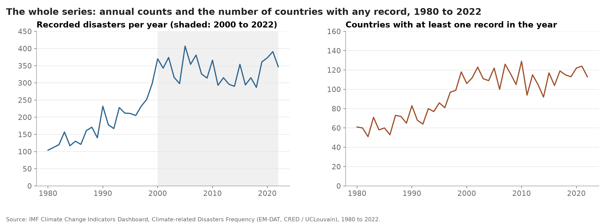

Proposition: Climate-related disasters are becoming more frequent.
Dataset: the IMF Climate Change Indicators Dashboard, table "Climate-related Disasters Frequency", which counts the climate-related disasters recorded each year from 1980 to 2022 in the Emergency Events Database (EM-DAT, maintained by CRED at UCLouvain; the IMF copy was accessed on 31 March 2023). We downloaded the CSV from the dashboard's data service on 22 October 2026 and cached it in a data/ folder that is not part of the published site; running make_charts.py downloads the same file again. The table is wide, with one column per year, so the first step in the script pivots it to one row per country, disaster type and year. Each country has a TOTAL row and up to six type rows (flood, storm, drought, extreme temperature, landslide and wildfire); the six type rows sum exactly to the totals.
Sample: the table covers 215 countries and territories and we keep all of them. The 215 include about two dozen territories and dependencies (for example Hong Kong, Guam, Bermuda and Tokelau) and five former states and territories that only have records for their years of existence (for example East and West Germany, the Soviet Union, Serbia and Montenegro, and the Netherlands Antilles). We treat each row as a reporting unit and refer to them as countries and territories. No row is dropped. We treat empty cells as years in which EM-DAT recorded no disaster: 5,176 of the 9,245 cells in the TOTAL rows are empty and we read every one of them as zero. EM-DAT records events by country, so an event that affects several countries is counted in each. The world totals therefore count country-events, not distinct events.
FOR the Proposition
![Left: stacked bar chart of the mean number of climate-related disasters recorded per year in each five-year period from 1980-84 to 2020-22, split into flood, storm, drought, extreme temperature, landslide and wildfire. The bars read 122, 145, 203, 240, 340, 356, 312, 322 and 370, with floods the largest and fastest-growing layer. A leader line labels the last bar 3.0x the 1980-84 rate. Right: line chart of the same period means for the 82 countries with at least one record in every period, rising from 104 in 1980-84 to 297 in 2020-22, labelled 2.8x the 1980-84 rate.](for_more_frequent.png)
Design Decisions and Rationale:
- Five-year period means instead of annual counts (score: -1). Each bar is the mean number of disasters per year within a five-year period. Averaging smooths the single-year peak of 407 in 2005 and the lower years from 2011 to 2018, so the series reads as a climb, a brief dip, then a new high. The annual series reads as a rise to 2000 followed by two decades of fluctuation around 340. We kept the 2010-14 dip (312 against 356) visible, which is why the score is moderate. Alternative considered: plotting annual counts, rejected because the year-to-year noise obscures the long-run rise.
- A final period of only three years (score: -1). The last bar covers 2020 to 2022 because the table ends in 2022. Its mean of 370 rests on three years, one of which (2021, with 391) is the second-highest year in the table. The bar is drawn at the same width as the five-year bars, and nothing signals that a three-year mean is more volatile. The headline "three times" is computed from this bar. Alternative considered: ending at 2019 with a full five-year bar (322), rejected because it would drop the three most recent years and lower the headline ratio.
- Stacked bars showing every disaster type, on an axis from zero (score: +1.5). The six types are stacked in a single muted ramp with floods at the base, and the axis starts at zero. The reader sees both the total and its composition. Floods (44 per year in 1980-84, 200 in 2020-22) and storms account for most of the growth, whilst droughts are roughly flat and landslides grew only from a low base. This adds information that could weaken our case and hides none. Alternative considered: a single total line, rejected because it would conceal that composition.
- A fixed panel of consistent reporters (score: -1). The right panel repeats the period means for the 82 countries and territories with at least one record in every period: 104 per year in 1980-84, 297 in 2020-22. These 82 hold about 80% of all records. The panel answers the objection that the rise comes from countries that only started appearing in EM-DAT later. It is still a selected group, and a country can report more events over time without suffering more of them. The chart offers the panel as if it settled the coverage question. Alternative considered: showing only the left panel, rejected because the coverage objection would then go unanswered.
- Title: "Climate-related disasters are three times as frequent as in the early 1980s, even among consistent reporters" (score: -0.5). Both claims are true of what is drawn: 370 against 122 per year for all countries (3.0 times) and 297 against 104 for the 82 consistent reporters (2.8 times). The language is calm and the title has no scope cutoff. "Frequent" describes events, whereas the data describe records, and the title does not say that a three-year mean is compared with a five-year mean. The subtitle names the averaging, so we score it as mildly deceptive. Alternative considered: "more often recorded", rejected because it states the claim more weakly than the proposition.
AGAINST the Proposition
![Left: line chart of climate-related disasters recorded per year from 2000 to 2022 on an axis from 0 to 500, moving between 287 and 407 with no clear direction, labelled 370 in 2000 and 347 in 2022, with a dashed fitted line labelled trend -0.6 per year. Right: bar chart of 215 countries and territories grouped by the change in their recorded disasters between the 2000s and the 2010s: 21 with 10 or more fewer, 29 with 5 to 9 fewer, 57 with 1 to 4 fewer, 28 unchanged, 56 with 1 to 4 more, 19 with 5 to 9 more and 5 with 10 or more more. Labels read 107 recorded fewer and 80 recorded more.](against_held_steady.png)
Design Decisions and Rationale:
- Both panels start in 2000, not 1980 (score: -1.5). The table begins in 1980, when 104 disasters were recorded, and by 2000 the count was 370. The left panel opens at the top of that rise. The right panel compares the 2000s with the 2010s and leaves out 2020 to 2022, the three years with the highest period mean in the table (370 per year). A reader sees twenty-three years of fluctuation and no sign of the twenty years of growth before them. EM-DAT's coverage is more complete after 2000, which is a real argument, but the chart does not make it. This is, with equal weighting, the most deceptive choice on this side. Alternative considered: starting in 1980, rejected because the early rise would dominate the chart and undercut the title.
- A fitted trend line read as the story (score: -0.5). The dashed line is an ordinary least-squares fit over the 23 annual counts, with a slope of -0.6 per year. The fit is genuine and the slope is tiny, which supports "held steady". The line still lends the plateau a precision it does not have. The counts range from 287 to 407, the last four years (2019 to 2022) all sit above the line, and a fit from 2014 onwards would slope upwards. The raw points are drawn alongside, so we score it as mildly deceptive. Alternative considered: a moving average in place of a fitted line, rejected because its shape depends on the window length.
- Axis from zero to 500 on the annual panel (score: +1). The value axis includes zero and is not truncated, so the year-to-year swings are shown at their true size relative to the level. A truncated axis running from 280 to 410 would make the same series look like a collapse and a rebound. We stop short of +2 because the top of the axis is 500 rather than the 450 the data need, which flattens the line slightly. Alternative considered: a truncated axis, rejected because it would exaggerate the swings.
- Every country counted once in the decade comparison (score: -1.5). The right panel bins countries by the change in their own decade total, so Romania's fall of 33 and a small island's fall of one each count as one country among the "107 recorded fewer". Of those 107, 57 fell by between one and four, and 29 had five or fewer disasters in the 2000s to begin with. The ten countries with the most records account for 37% of all disasters in the 2010s. Equal weighting asks how widespread the change was, and the world total did fall from 3,483 to 3,171, but the headline counts are dominated by countries with very few events and nothing on the chart says so. Alternative considered: plotting only the change in the world total, rejected because it would hide how many countries moved in each direction.
- Title: "The number of climate-related disasters recorded each year has held steady for more than two decades" (score: -0.5). The claim is true of the 23 years shown, the language is calm, and "recorded" is more careful than the FOR title's "frequent". The phrase "more than two decades" names a duration rather than a start date, which makes the window sound like the whole available history. A reader who does not know the earlier years has no reason to ask what came before. The subtitle gives the years, so we score it as mildly deceptive. Alternative considered: "since 2000", rejected because it invites the question of why the series starts there.
Final Reflection

The supporting chart was the easier of the two to build, because the long-run numbers are unambiguous: 1,333 recorded disasters in the 1980s, 2,215 in the 1990s and 3,483 in the 2000s. The difficulty was the 2010s, which at 3,171 fell short of the 2000s. Most of our effort went into five-year means, under which that shortfall reads as a pause. The opposing chart was harder in a different way. Its evidence is real, since the annual count has had no trend since 2000 and more countries recorded fewer disasters in the 2010s than more. But the only version that persuaded was the one that left out the twenty years before 2000. The most surprising finding was how much of the debate concerns reporting rather than weather. The number of countries with any record in a year roughly doubled between the 1980s and the 2000s.
We define ethical analysis and visualization as work in which the reader could, from the chart and its notes, reconstruct how a different reasonable analysis would have reached a different conclusion. None of our ten decisions needed a truncated axis or an altered number. The problems lie elsewhere, in the shortened window and in the panel offered as a settled answer to the coverage question. Those choices concern what is counted and when counting starts, so they live off the chart and a reader who sees only the image never meets them. By this standard the stacked types, the full axes and the reference figure below are ethical choices.
Persuasion becomes misleading where a choice depends on the reader not knowing the alternative. Emphasis, ordering and a confident headline are acceptable when they direct attention to something genuinely in the data. A window, a denominator or a unit of counting chosen because the obvious alternative weakens the conclusion, and then presented as the only option, is misleading. The indicator also has limits: it counts events rather than severity, and better reporting cannot be separated from any change in the climate. "More frequent" is therefore measured as "more often recorded". The boundary is not sharp, but a practical test is whether we would be comfortable showing the reader the version we left out. Here that version is the reference figure below.
